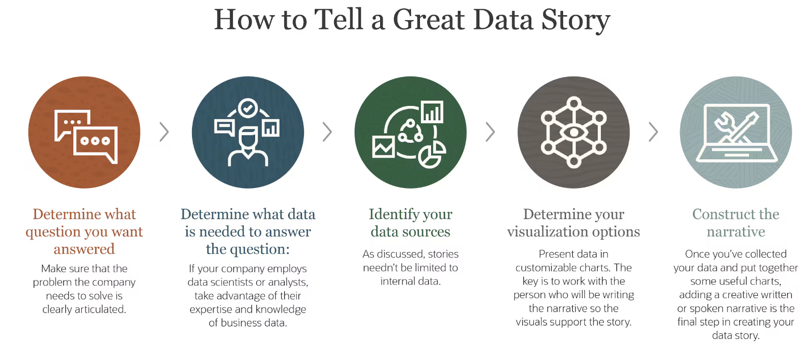

Data storytelling combines data analysis, visualization, and narrative to effectively communicate insights and inspire action. A good data story makes complex findings accessible, engaging, and memorable.
Definition111.
Data storytelling is the practice of building a narrative around data to help an audience understand the context, significance, and implications of the data. It combines analytical, visual, and narrative elements to transform data into insights that drive understanding and action.
Key elements of effective data storytelling:
Narrative Structure
A clear beginning, middle, and end that guides the audience through the data journey.
Setup: Introduce the context, question, or problem
Conflict/Tension: Present the data, challenges, or unexpected findings
Resolution: Share insights, implications, and potential actions
Audience Focus
Tailoring the presentation to the specific needs, interests, and technical literacy of your audience.
Clear Message
A central insight or "so what" that the audience should remember.
Compelling Visuals
Well-designed visualizations that support and enhance the narrative.
Context and Relevance
Information that helps the audience understand why the data matters and how it connects to broader issues.
Human Element
Connecting data to human experiences, decisions, or impacts to increase engagement.

Figure112.Data Story Structure
Common data storytelling approaches:
Change over time: Showing evolution, trends, or transformations
Comparison: Highlighting similarities and differences between groups
Connection: Revealing relationships or networks
Outlier: Focusing on exceptional cases or anomalies
Zoom in/out: Moving between big picture and specific details
Personal relevance: Connecting broad patterns to individual experiences
Example113.Community Health Data Story.
A data story for our Community Health project might follow this structure:
Setup:
Introduce the context of environmental health disparities in the city
Establish the key questions about how environmental factors relate to health outcomes
Provide background on why this matters for public health and equity
Data Presentation:
Share a map visualizing health indicators across neighborhoods
Show key relationships between environmental factors and health outcomes
Highlight unexpected patterns or particularly affected areas
Insights:
Present the three most significant findings about environmental health relationships
Discuss how socioeconomic factors interact with these relationships
Address limitations and areas of uncertainty in the analysis
Resolution/Call to Action:
Suggest potential interventions based on the findings
Identify neighborhoods most in need of environmental health improvements
Propose next steps for research or policy consideration
Checkpoint114.Data Storytelling Approaches.
Which data storytelling approach would be MOST effective for communicating how unequal access to healthcare affects different demographic groups?
A technical analysis focusing on statistical significance and p-values
A highly technical approach focusing on statistical details would likely not be as effective for communicating inequities to a broad audience or driving understanding of human impact.
A comprehensive dashboard with all available metrics without narrative structure
While comprehensive data is valuable, presenting all metrics without a narrative structure or focus on human impact would make it difficult for the audience to identify key inequities or their implications.
A narrative that combines broad patterns of inequality with specific examples of how these affect individuals
Correct! This approach effectively combines data-driven patterns with human impact, making the inequities both statistically clear and emotionally resonant. Connecting aggregate data to individual experiences helps the audience understand both the scope and the human consequences of healthcare access disparities.
A presentation focused primarily on data collection methodology and limitations
While methodology and limitations are important to address, making them the primary focus would detract from communicating the actual inequities and their impact.
Activity32.Planning Your Data Story.
In this activity, you’ll develop a structured data story for your project.
(a)
Define your data story by answering these questions:
Who is your primary audience? (e.g., classmates, general public, specific stakeholders)
What is the main message or insight you want to communicate?
Why should your audience care about this topic?
What action or response do you hope to inspire?
(b)
Create an outline for your data story with these components:
Introduction: Context, motivation, and key questions
Main sections: 2-4 key findings or insights, each supported by visualizations
Conclusion: Summary of main message, implications, and potential next steps
(c)
For each section of your story, identify:
The specific data or visualization that will support this part of the narrative
How you’ll transition from one point to the next to create a coherent flow
Any potential questions or objections from your audience that you should address
SubsectionEffective Presentation Techniques
Once you’ve developed your data story, you need to present it effectively to your audience. Good presentation techniques help ensure your insights are understood, remembered, and potentially acted upon.
Key aspects of effective data presentations:
Clear Structure
A logical flow that guides the audience through your analysis and findings.
Begin with a clear introduction of the topic and its importance
Present main findings in a logical sequence
End with conclusions, implications, and next steps
Visual Support
Well-designed slides or materials that enhance understanding.
Use consistent, clean design with minimal text
Ensure visualizations are large enough to be clearly visible
Highlight key points visually (through color, size, or position)
Engagement Techniques
Methods to maintain audience interest and involvement.
Start with a compelling hook or question
Use storytelling to create narrative flow
Include examples or scenarios that make data relevant
Clarity and Accessibility
Making your content understandable for your specific audience.
Define technical terms if necessary
Explain visualization types if they might be unfamiliar
Focus on insights rather than technical details (unless relevant for your audience)
Verbal Delivery
How you speak and present yourself.
Practice to ensure comfortable delivery and timing
Speak clearly and at an appropriate pace
Make eye contact with the audience
Tips for presenting data findings:
Start with the "so what" - the main insight or takeaway
Show the visualization, then explain what it shows (don’t make the audience read and listen simultaneously)
Focus on the most important patterns or findings rather than describing every detail
Address limitations honestly but don’t undermine your key findings
Be prepared for questions about methodology or alternative interpretations
End with clear implications or recommendations if appropriate
Figure115.Example Presentation Slide Layout
Checkpoint116.Organizing a Data Presentation.
Arrange the following elements in a logical order for a data science presentation.
Introduction: Hook the audience with a compelling question or problem statement related to your data.
---
Context: Briefly explain the dataset, its sources, and why this analysis matters.
---
Key findings: Present your most important insights, supported by clear visualizations.
---
Technical details: Spend most of your time explaining data cleaning procedures and statistical methods.
#paired
---
Literature review: Extensively discuss how your work relates to previous research.
#paired
---
Implications: Discuss what your findings mean for understanding the issue or making decisions.
---
Limitations: Acknowledge constraints of your data or analysis to establish credibility.
---
Conclusion: Summarize key takeaways and suggest potential next steps or actions.
---
Detailed methodology appendix: Present all technical procedures in exhaustive detail.
#distractor
Hint.
Think about the logical flow of information that would help an audience understand and engage with your findings.
Activity33.Preparing Your Presentation.
In this activity, you’ll prepare for your final project presentation.
(a)
Create an outline for your presentation, including:
Introduction: Hook, context, and main question(s)
Methods: Brief overview of your data sources and approach
Findings: 2-4 key insights from your analysis
Implications: What these findings mean and why they matter
Conclusion: Summary and potential next steps
(b)
Develop presentation materials:
Decide on presentation format (slides, live demo of CODAP dashboard, etc.)
Select key visualizations that best communicate your findings
Create any needed additional materials (handouts, reference sheets, etc.)
(c)
Practice your presentation:
Time yourself to ensure you stay within the allocated time
Practice explaining your visualizations clearly
Prepare for potential questions about your data or analysis
(d)
Peer review: Exchange presentation materials with a classmate and provide feedback on:
Clarity of main message
Effectiveness of visualizations
Flow and structure of the presentation
Any areas that might be confusing or need further explanation
SubsectionCommunicating Data Ethically and Effectively
The way we communicate data findings carries responsibility. Ethical and effective communication ensures that our analysis leads to understanding rather than misinterpretation.
Principles for ethical data communication:
Accuracy and Honesty
Present findings accurately without distortion, exaggeration, or omission of important context.
Transparency
Be open about data sources, methods, limitations, and uncertainties.
Respect for Audience
Avoid manipulation, oversimplification, or complexification that disrespects audience capabilities.
Cultural Sensitivity
Consider how findings might be interpreted by different groups and avoid reinforcing harmful stereotypes.
Privacy and Confidentiality
Protect individuals’ privacy when communicating findings, especially with sensitive data.
Balanced Representation
Present multiple perspectives or interpretations when appropriate, rather than a single narrative.
Strategies for effective communication across different audiences:
For technical audiences: Include methodological details, statistical significance, and nuanced findings
For general audiences: Focus on clear insights, relatable examples, and visual explanation
For decision-makers: Emphasize implications, recommendations, and actionable insights
For diverse stakeholders: Consider multiple perspectives and potential impacts on different groups
Example117.Communicating Community Health Findings.
When communicating findings from our Community Health project, we might:
Acknowledge limitations in our data, such as potential underreporting of health conditions in areas with less healthcare access
Present environmental disparities in historical and systemic context rather than implying they result from individual choices
Use neutral terminology when discussing neighborhood differences to avoid stigmatizing communities
Include perspectives from community members alongside statistical findings when possible
Be careful about how we present relationships between demographic factors and health outcomes to avoid reinforcing stereotypes
Clearly distinguish between correlation and causation in our environmental health findings
Checkpoint118.Ethical Data Communication.
Which of the following represents the MOST ethical approach to communicating findings about educational achievement gaps between different demographic groups?
Avoid presenting the data entirely to prevent reinforcing stereotypes about any group.
While sensitivity is important, completely avoiding relevant data prevents understanding real disparities that might need addressing. Ethical communication involves presenting accurate information with appropriate context.
Present only the data that shows narrowing achievement gaps to focus on positive trends.
Selectively presenting only positive data creates an incomplete and potentially misleading picture. This approach lacks transparency and accuracy.
Present comprehensive data alongside contextual factors like historical inequities in school funding and resources.
Correct! This approach maintains accuracy by presenting the complete data while providing crucial context about systemic factors that influence educational outcomes. This helps audiences understand the complexities behind achievement gaps without reinforcing simplistic narratives about group differences.
Use dramatic visualizations to emphasize the gaps and create urgency for immediate action.
Using dramatic or exaggerated visualizations to evoke an emotional response can distort the data and manipulate the audience, which violates principles of accuracy and respect.
Activity34.Communication Review.
In this activity, you’ll review and refine the communication aspects of your project.
(a)
Review your dashboard, presentation, or other communication materials with these questions:
Are there any ways your visualizations or narrative might inadvertently mislead viewers?
Have you adequately addressed limitations and uncertainty in your data and analysis?
Are there multiple perspectives or interpretations that should be acknowledged?
Does your communication respect the communities or populations represented in your data?
(b)
Based on your review, make at least three specific improvements to your communication materials to make them more ethical and effective.
(c)
Write a brief reflection (1-2 paragraphs) on the ethical considerations most relevant to your specific project and how you’ve addressed them in your communication.